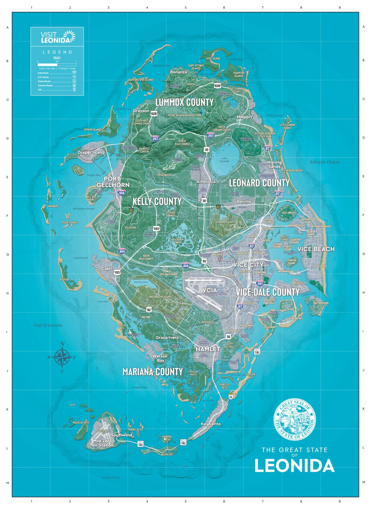
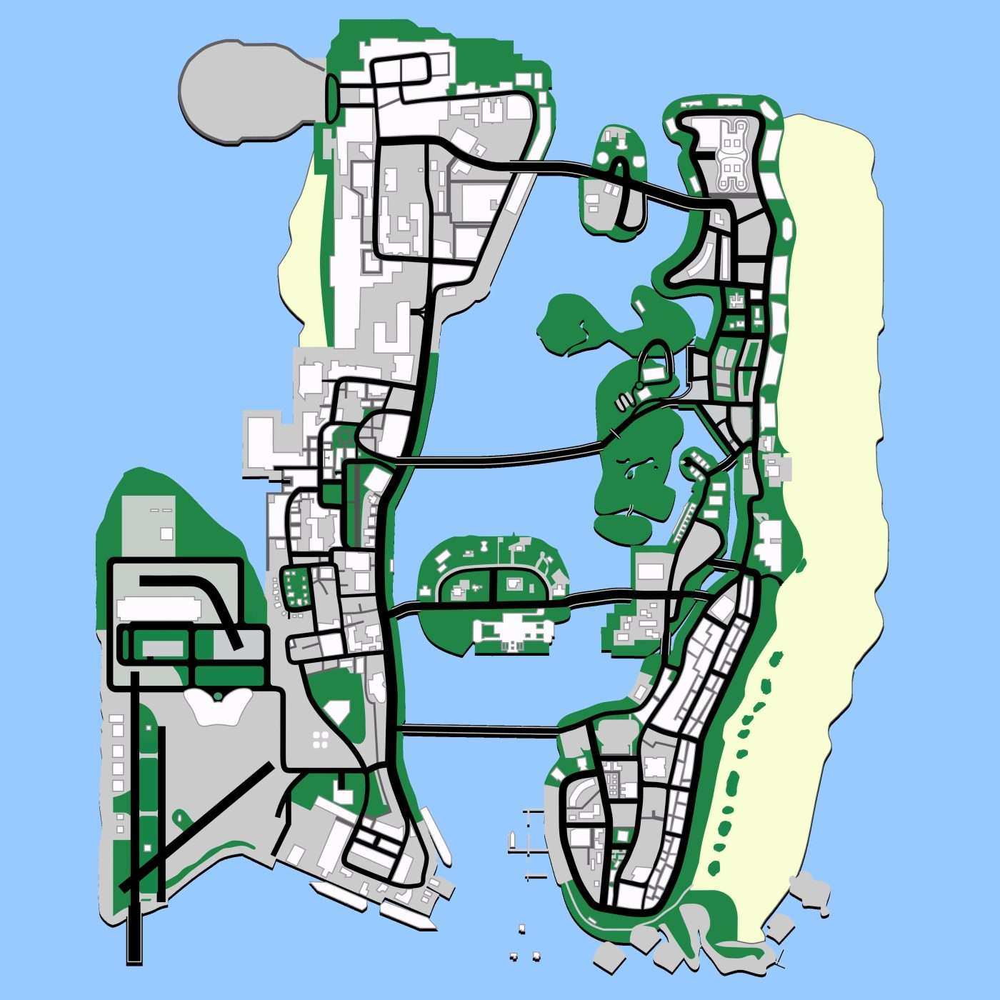
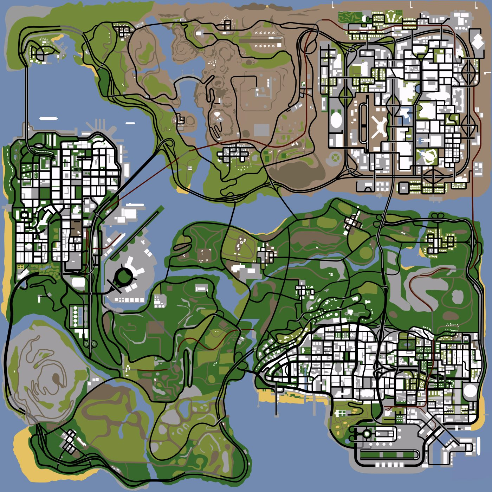
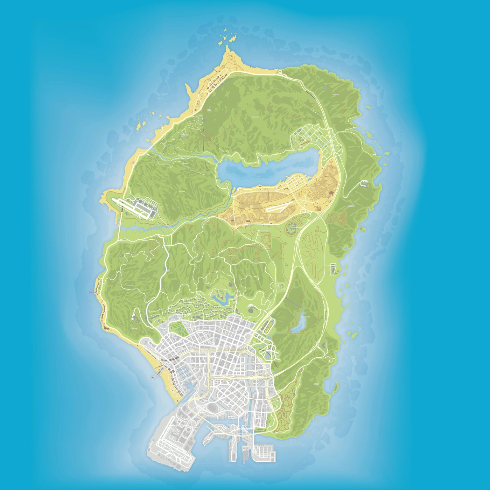
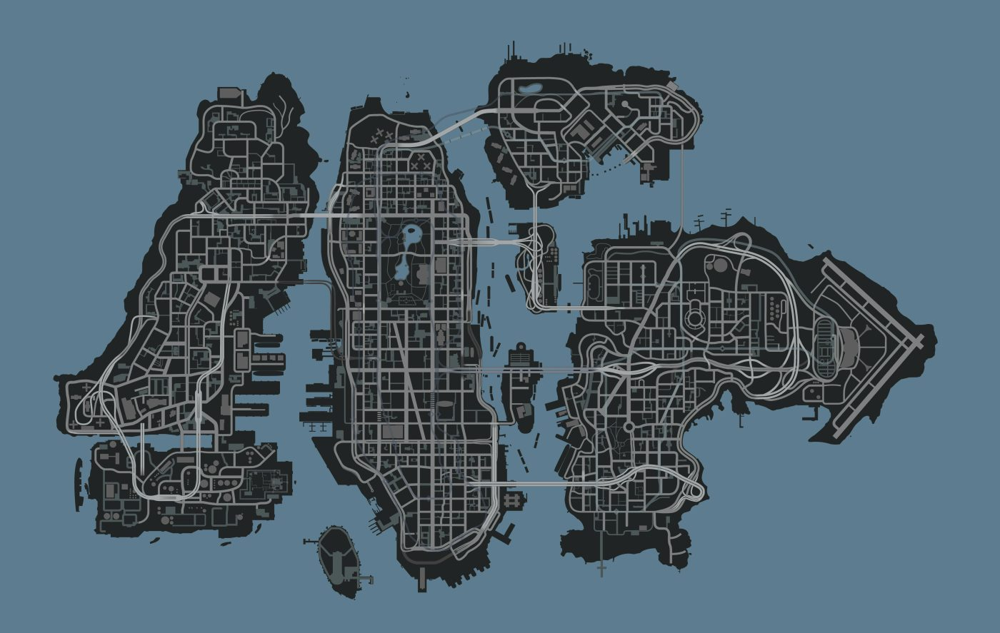
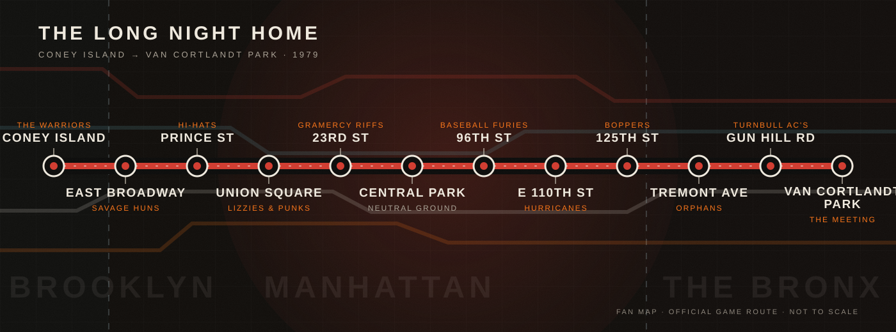
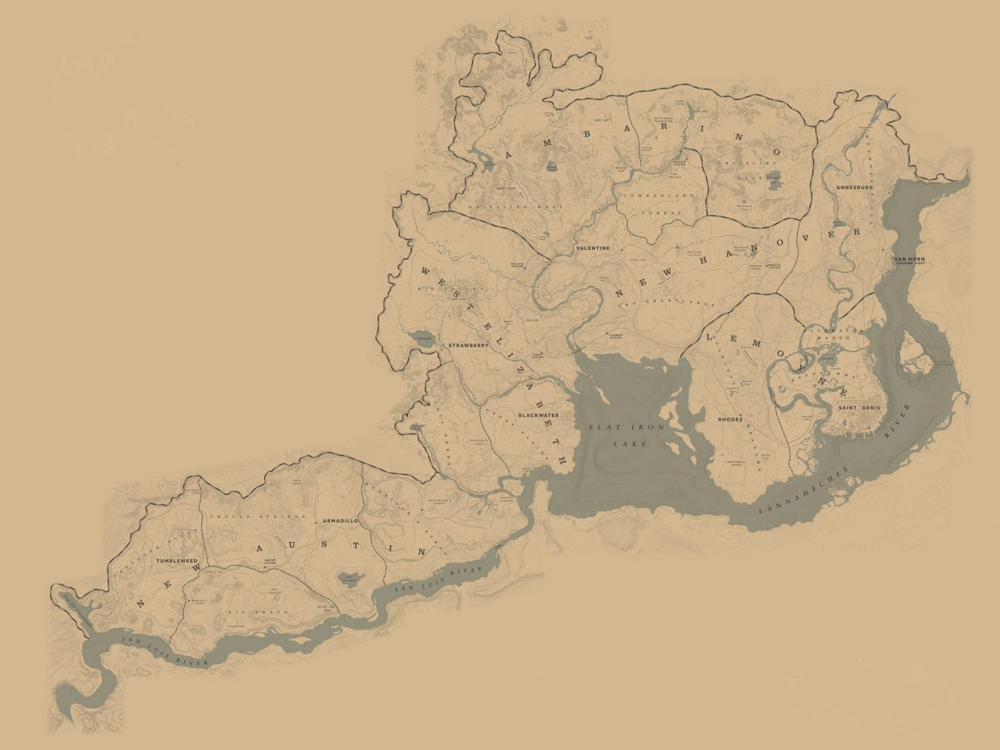
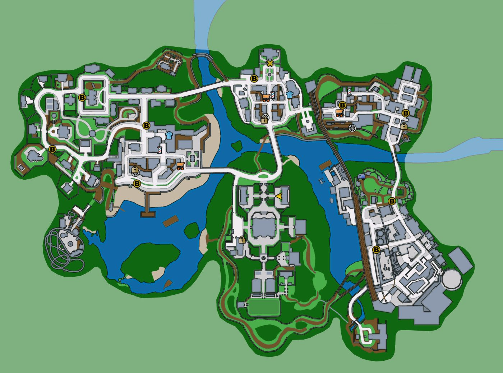

Home / GTA mapsGTA MAP ATLAS
GTA maps, district by district.
Every major GTA map in one place: Leonida and Vice City, San Andreas and Los Santos, Liberty City, the Red Dead frontier, Bullworth, and The Warriors' New York. Each entry lists fan-annotated districts and landmarks, with a link to the interactive version and the game dossier. None of the annotations are official cartography.
Open the interactive GTA map Compare GTA cities with real life

Map artwork © Rockstar Games, via the GTA Wiki · map source
GTA VI / Leonida
The State of Leonida
Official GTA VI map · fan annotations, not to scale.
Vice City — Neon capital. The main stage. Causeways, condo towers, club queues, and a skyline that treats every sunset like a premiere.Vice Beach — Barrier island. Sand, rollerblades, and oceanfront trouble. The postcard version of Leonida is always hiding a second story.Leonida Keys — Island chain. A string of causeways and small islands where the mainland feels very far away — until someone recognizes your car.Grassrivers — Wetland maze. Airboats, alligators, and water roads. A place where the map ends and the local knowledge begins.Port Gellhorn — Salt-worn docks. Working docks, cheap motels, and a gulf-coast rhythm that does not care about your schedule.Ambrosia — Industrial edge. Refineries and freight by day; long shadows and side deals after dark. The state's unglamorous engine room.Mount Kalaga — National park. Pine ridges, switchbacks, and the kind of quiet that makes every distant engine sound suspicious.Lake Leonida — Inland water. A dark blue lung in the middle of the state, ringed by small towns and very specific local rumors.
Open this map interactively
Grand Theft Auto VI dossier

Map artwork © Rockstar Games, via the GTA Wiki · map source
Vice City
Vice City, 1986
Official GTA: Vice City map · fan annotations.
Ocean Beach — Beachfront strip. Neon hotels, rented convertibles, and the feeling that everyone is either somebody or about to pretend to be.Starfish Island — Gated wealth. Mansions behind gates and palms. The shortest route between two crimes is often a driveway.Little Havana — Cuban quarter. Coffee, cigars, car culture, and a community with its own rules about who gets respect.Little Haiti — Northern district. A neighborhood under pressure, with turf lines drawn in paint, money, and mutual distrust.Downtown — Glass and ambition. Office towers, construction cranes, and a skyline that looks best through the windshield of a stolen car.Malibu Club — Nightlife. A neon landmark where the music is loud enough to drown out at least three ongoing conspiracies.Escobar International — Airport. Arrivals, departures, and the occasional package that never appears on a manifest.Vice Port — Docks. Containers, forklifts, and the kind of quiet that gets interrupted by a car chase.
Open this map interactively
Grand Theft Auto: Vice City dossier

Map artwork © Rockstar Games, via the GTA Wiki · map source
San Andreas
San Andreas, 1992
Official GTA: San Andreas map · fan annotations.
Los Santos — Sprawl. Freeways, palms, and neighborhoods where history is measured in blocks.Grove Street — Home turf. Green paint, cul-de-sacs, and a family name that carries weight both inside and outside the block.San Fierro — Coastal city. Hills, bridges, fog, and a colder social climate than Los Santos.Las Venturas — Casino strip. Neon carpet, all-night buffets, and the house always having a plan.Red County — Rural. Orchards, dirt roads, and small-town deputies with very long memories.Bone County — Desert. Heat shimmer, abandoned mines, and a military installation nobody is supposed to discuss.Mount Chiliad — Peak. The state's high point and a favorite finish line for bad ideas.Area 69 — Restricted. Fences, guard towers, and enough secrecy to make a conspiracy theorist feel seen.
Open this map interactively
Grand Theft Auto: San Andreas dossier

Map artwork © Rockstar Games, via the GTA Wiki · map source
GTA V / Los Santos
Los Santos & Blaine County
Official GTA V map · fan annotations.
Downtown Los Santos — Skyscrapers. Glass towers, construction sites, and enough traffic to make a helicopter feel reasonable.Vinewood Hills — Celebrity. Hillside mansions and billboard smiles. The view is expensive; the neighbors are worse.Vespucci Beach — Boardwalk. Muscle beach, skate parks, and a boardwalk economy built on sunglasses and optimism.Del Perro Pier — Coastline. Ferris wheel lights, tourist crowds, and the Pacific doing its best to look peaceful.Sandy Shores — Desert town. Dust, dive bars, and a lake that is more of a rumor than a resort.Paleto Bay — Small town. A sleepy northern town where a bank job feels like the biggest event of the decade.Grapeseed — Farmland. Fields, barns, and a lot of open space for things to go wrong.Fort Zancudo — Military base. Restricted airspace, armed guards, and a standing invitation to leave immediately.
Open this map interactively
Grand Theft Auto V dossier

Map artwork © Rockstar Games, via the GTA Wiki · map source
GTA IV / Liberty City
Liberty City, 2008
Official GTA IV map · fan annotations.
Broker — Borough. Niko and Roman's first neighborhood: tight streets, louder arguments, and rent that is always due.Dukes — Borough. Industrial edges and residential pockets, with a skyline that never lets you forget where you are.Bohan — Borough. Crowded blocks and a hard-won sense of community. Also a very good place not to owe someone money.Algonquin — Manhattan stand-in. Vertical city: media towers, museums, and a million windows into other people's business.Alderney — Industrial. Factories, highways, and the kind of gray that settles into your jacket.Hove Beach — Immigrant quarter. Russian storefronts, boardwalk air, and the first taste of Liberty City's promise for Niko.Middle Park — Green space. A rare patch of quiet in a city that rarely rewards stillness.Star Junction — Neon crossing. Billboards, crowds, and the feeling of being a very small story in a very large city.
Open this map interactively
Grand Theft Auto IV dossier

Route and stations: The Warriors official site (Rockstar Games, 2005), via thewarriorsgame.com. Map redrawn as original fan vector art · map source
The Warriors
New York, 1979
Fan-drawn subway route of the game's twelve stops, from Coney Island to Van Cortlandt Park.
Coney Island — Home turf. The boardwalk base and the last stop of the night. Everything the Warriors do is measured by the distance back to this platform.East Broadway — Savage Huns. Chinatown turf and the Huns' dojo. A detour that turns into a lesson about whose streets these are.Prince St — Hi-Hats. SoHo rooftops and a gang that treats paint, mime, and territory as the same discipline.Union Square — Lizzies & Punks. A transfer maze of tunnels, trains, and too many exits. The Lizzies and the Punks both claim a piece of it.23rd St — Gramercy Riffs. Riffs country. Cyrus's network reaches every borough, and this is where the city starts listening.Central Park — Neutral ground. A dark cut across the middle of Manhattan where the only advantage is knowing which path is shorter.96th St — Baseball Furies. Riverside Park and the Furies. Bats, face paint, and a chase that keeps moving uptown.E 110th St — Hurricanes. Spanish Harlem turf, where the Hurricanes treat every block like family property.125th St — Boppers. Harlem and Club 45. Style, music, and a crew that keeps the neighbourhood smooth.Tremont Ave — Orphans. The Bronx tenements and Sully's small-time crew, still trying to talk their way into a bigger reputation.Gun Hill Rd — Turnbull AC's. The bus, the yard, and the Turnbulls. A stop best made at a run.Van Cortlandt Park — The meeting. Cyrus calls the city's gangs together here. The truce speech ends in gunfire, and the long night home begins.
Open this map interactively
The Warriors dossier

Map artwork © Rockstar Games, via the Red Dead Wiki · map source
Red Dead
The Frontier, 1899
Official Red Dead Redemption 2 map · fan annotations.
Valentine — Frontier town. Muddy streets, cattle auctions, and a saloon that has seen better men and worse decisions.Rhodes — Southern town. Sun-bleached storefronts and old grudges wearing their Sunday best.Saint Denis — Industrial city. Electric light, streetcars, and the uncomfortable future arriving ahead of schedule.Blackwater — Town. A prosperous waterfront with a short memory and a long list of people who want something from you.Armadillo — Desert town. Heat, dust, and the kind of silence that suggests everyone is armed.Emerald Ranch — Ranchland. Open fields and honest work, at least until somebody brings a problem through the gate.Annesburg — Mining town. Coal dust, company housing, and a town built around someone else's profit.Tall Trees — Wilderness. Old forest and older violence. The law is a rumor out here.
Open this map interactively
Red Dead Redemption II dossier

Map artwork © Rockstar Games, via the Bully Wiki · map source
Bully
Bullworth Academy
Official Bully map · fan annotations.
Bullworth Academy — Boarding school. Gothic halls, detention slips, and a hierarchy more complicated than most governments.Bullworth Town — Town center. A quiet main street, a comic shop, and the occasional perfectly ordinary errand that goes sideways.Old Bullworth Vale — Affluent district. Manicured lawns and old money, where a PTA meeting can feel like a border dispute.New Coventry — Greaser turf. Garages, chain-link fences, and a neighborhood that does not hand out trust for free.Blue Skies Industrial Park — Industry. Warehouses, fumes, and enough empty space for a very bad plan to find room to grow.Harrington House — Old estate. Portraits, polished wood, and family secrets with excellent posture.Bullworth Carnival — Fairground. Lights, games, and the strange freedom of a fairground after dark.Happy Volts Asylum — Institution. A hulking building on the edge of town that everyone mentions and nobody wants to visit.
Open this map interactively
Bully dossier
Which real city is each GTA map based on?
Vice City and Leonida echo Miami and Florida, Liberty City echoes New York, Los Santos echoes Los Angeles, San Fierro echoes San Francisco, Las Venturas echoes Las Vegas, and Saint Denis echoes New Orleans. The GTA vs real life comparison puts each pair side by side.
Unofficial fan project. Map artwork belongs to Rockstar Games and is credited with each image. Annotations are fan-made and not official cartography. Not affiliated with, endorsed by, or sponsored by Rockstar Games or Take-Two Interactive.